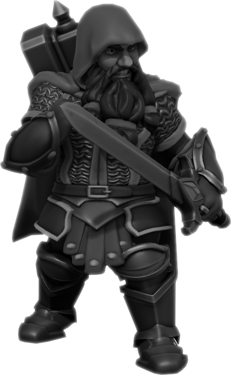

 En el lugar donde Falric nació, un individuo es tan digno como las obras que uno forja. Es por ésto que su padre y patriarca fue exiliado en el momento en que los ancianos se enteraron de que una espada de su producción se rompió en el primer choque y dejó morir a su portador. Desde entonces, Falric vaga por todo el continente en busca de su padre y una manera de forjar una creación digna de restaurar el honor del clan. A pesar de parecer reservado, se mantuvo cercano a su grupo. No dudó en ninguna ocasión ser de ser de utilidad para los demás y se mostró en todo momento como una persona de suma confianza.